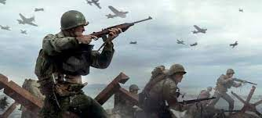
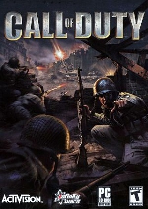
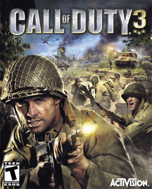

Call of Duty é uma franquia de jogos eletrônicos de tiro em primeira pessoa publicado pela Activision.
O primeiro título da série foi lançado em 2003 e começou nos computadores, mais tarde a
série se expandiu para os mais variados consoles, portáteis e smartphones. Os três primeiros títulos da
série se concentraram em jogos ambientados na Segunda Guerra Mundial, apresentando batalhas e
acontecimentos históricos daquele período. Com o tempo, a série viu jogos ambientados na Guerra Fria, em
tempos atuais, mundos futuristas até o espaço sideral. O título mais recente, Call of Duty: Vanguard , foi lançado em 5 de novembro de 2021.
Imagem Activision
Os jogos da série Call of Duty são publicados pela Activision. Enquanto que o estúdio Infinity Ward ainda
é o principal produtor, a Treyarch também já produziu alguns títulos onde a história está interligada
entre eles. Alguns jogos já foram produzidos pela Gray Matter Interactive, Nokia, Exakt Entertainment,
Spark Unlimited, Amaze Entertainment, n-Space, Aspyr, Rebellion Developments, Ideaworks Game Studio,
Sledgehammer Games, Raven Software e nStigate Games.
Temática
Os primeiros jogos da série, desde Call of Duty até Call of Duty 3, estão ambientados na Segunda Guerra Mundial e são baseados em fatos históricos, alguns muito
conhecidos como a Batalha da Normandia ou a defesa do território russo por parte do Exército Vermelho,
recriando as batalhas mais importantes, levando o jogador a uma série de cenários na Europa e no Norte da
África.
Call of Duty: Black Opsrepresenta, pela primeira vez na série, a Guerra Fria
sendo uma sequência direta de Call of Duty: World at War ao mostrar personagens já conhecidos, entre eles,
Dimitri Petrenko e Viktor Reznov, este último, tendo um papel significativo no jogo por ser um dos
personagens principais.

Características dos principais jogos
Call of Duty
Call of Duty é um videojogo baseado no motor Quake III Arena
engine (id Tech 3), foi o primeiro título da série lançado em outubro de 2003 exclusivamente
para PC, marcando a criação da franquia. Foi produzido pela Infinity Ward e publicado pela Activision. O
jogo simula a infantaria e as forças combinadas da Segunda Guerra Mundial.

Call of Duty 2
Call of Duty 2 é a sequência do aclamado Call of Duty.
Foi produzido pela Infinity Ward e publicado pela Activision. A ação também decorre na Segunda Guerra
Mundial através da perspectiva de vários exércitos. Foi lançado em Outubro de 2005 para PC, em Novembro de
2005 para Xbox 360, em Junho de 2006 para Mac OS X. Foram feitas outras versões móveis.
Call of Duty 3
Call of Duty 3 é o terceiro jogo da série Call of Duty.
Lançado em Novembro de 2006, o jogo foi produzido pela Treyarch, o primeiro Call of Duty que não teve
produção da Infinity Ward. A história do jogo foi a primeira da série principal a abordar profundamente a
história e a biografia dos personagens, bem como se concentrar em somente uma frente da guerra. Foi também o
primeiro a não ser lançado para PC, sendo exclusivo para consoles.

Call of Duty: Modern Warfare II
Call of Duty mw 2 é um jogo de tiro em primeira pessoa Call of Duty.
É o sexto lançamento relacionado à série Call of Duty, sendo uma sequência direta de Call of Duty 4: Modern Warfare, trazendo uma continuação da história desenvolvida em seu predecessor. Foi lançado em conjunção com dois outros jogos da série: Call Of Duty: Modern Warfare: Mobilized, para Nintendo DS, e Call of Duty: Modern Warfare: Reflex, uma versão portátil de Call of Duty 4 adaptada pela Treyarch para o console Wii.